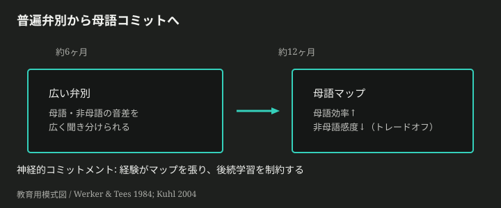
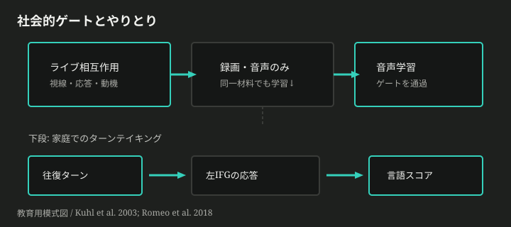
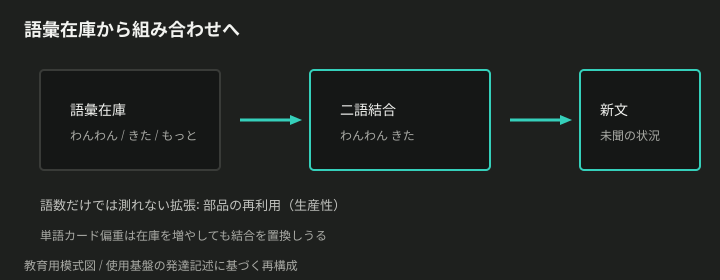
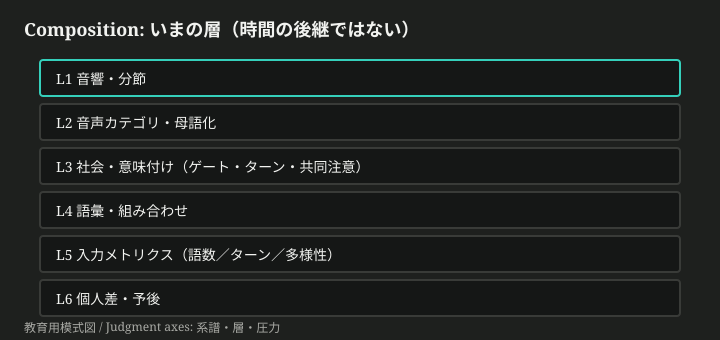

願いの摩擦から入る
子どもに言葉が育ってほしい——願いははっきりしている。なのに処方箋はぶつかる。とにかく話しかけろと、会話のキャッチボールが大事だ。ベイビートークはやめろと、parentese が効く。早期のフラッシュカードと、スクリーンは言語を奪う。遅い子は様子見でいいと、直ちに相談しろ。同じ脳のなかで、何が段階として積み上がり、何が個人差として分岐するのか。スローガンだけでは見えない。
ここで失うのは、正解の育児マニュアルではない。流行の言説に、子どもがいま解いている問題をすり替えてしまうことだ。何が発達の制約で、何が測定の争い、何が価値判断かを分けられないと、「良い親／悪い親」の物語に主体性を奪われる。
この記事は、推奨スタックを渡さない。脳と行動が解いている問題の列を辿り、世の主張を分解し、問いで終わる。
理解の道筋は、次の問題の列だけにする。
- 切れ目のない音から、どうやって「語」の単位が立ち上がるか。
- なぜ母語の音へ絞り込むのか。
- 音のかたまりは、どう意味と結びつくのか。
- 単語だけでは足りない——組み合わせはどう可能になるのか。
- 同じ年齢でも速さに差が出るのは、何が分岐しているのか。
- 世の「こうすべき」は、どの層を触り、何を測り損ねているのか。
完成した「理想の話し手」は入口に置かない。先に置くのは、摩擦だけだ。
切れ目のない音から単位へ
大人の耳には、言葉が区切れて聞こえる。録音をゆっくり再生すると分かるが、実際の話しことばに空白のしるしはない。子どもは、切れ目のない音の流れのなかに生まれ落ちる。なのに数年後には、「わんわん」や「もっと」を語として扱う。切れ目は、どこから来るのか。
一つの答えは、音の並び方の統計にある。ある音節のあとに別の音節が来る確率——遷移確率——は、語の内側で高く、語の境で低くなることが多い。乳児は、この分布のゆがみを短い露出でも拾える。Saffran, Aslin, Newport（1996）は、8ヶ月児が約2分の人工言語を聞いただけで、語様の単位と境界をまたぐ並びを区別したと報告した。(*1) 後続実験では、出現頻度を揃えても条件付き確率の差だけで区別できることが示された。(*2)
これは「天才的な耳」の物語ではない。分布の規則性を抽出する学習が、空白のないストリームに候補単位を立てる、という話だ。自然音声では韻律や休止も手がかりになる。だが第一の壁は変わらない。語として扱う単位がなければ、意味も文法も始まらない。
シミュレーションを開く — 隣接音節の共起が高い塊は、語らしさの候補になる
得たものは、入口の問題設定である。失うのは、「耳が良い子だけが語を切れる」一点説明だ。次の違和感はすぐ来る。単位ができても、世界のどの音の違いが「同じ語／違う語」なのかは、まだ決まっていない。
母語への絞り込み
単位の候補が見えても、まだ足りない。生まれたばかりの乳児は、多くの言語の音の違いを聞き分けられる。なのに1歳前後には、聞いたことのないコントラストへの感度が落ちる。耳が悪くなったのだろうか。それとも、何か別の仕事が始まったのか。
Werker と Tees（1984）は、非母語の音声コントラスト弁別が、生後1年以内に経験依存で低下することを示した。(*3) Kuhl はこれを、単なる喪失ではなく「母語への神経的コミットメント」として読む。初期に母語の統計へマップを張り替えると、その言語の処理は効率になる。同時に、マップに合わないパターンの学習は難しくなる。(*4) 7ヶ月時点の母語弁別の良さは後の言語発達を予測し、非母語弁別の良さは逆方向に効く、という報告もある。(*5)
ここでのトレードオフははっきりしている。普遍弁別を一生維持すれば、母語のカテゴリは固まらない。母語効率を上げれば、他言語の音の壁は厚くなる。「臨界期」を誕生日で閉まるドアだと思うと、経験の役割が見えなくなる。閉じ方を駆動するのは、時計だけでなく、すでに張られたマップだ。

得たものは、後続学習の土台である。失うものは、万能の耳という幻想だ。だが音カテゴリがあっても、それはまだ意味ではない。「わんわん」の音のかたまりが、庭の犬を指すのは、別の問題である。
やりとりが意味を貼る
音のかたまりができても、世界との対応は自動では決まらない。同じ音の列が、無数の対象・性質・行為に当たりうる。一方通行で音を浴びせれば足りるのか。それとも、誰かと向き合うことが条件になるのか。
Kuhl, Tsao, Liu（2003）は、9ヶ月のアメリカ人乳児に北京語を短期間聞かせた。ライブの話者との相互作用では、北京語の音声弁別が保たれた。同じ材料を DVD や音声だけで与えても、学習は起きなかった。(*6) 音の統計だけがすべてなら、録画でも足りるはずだ。足りなかった。社会的な注意・視線・動機づけが、学習のゲートになっている——少なくともこの古典条件ではそう読める。
語彙を動かす側でも、一方通行より往復が前景に出る。Romeo ら（2018）は、家庭録音のターン数（大人と子どもの往復）が、語数や SES・IQ を超えて、物語聴取時の左下前頭回（いわゆる Broca 領域）の賦活と言語スコアに関連したと報告した。(*7) Ferjan Ramírez, Lytle, Kuhl（2020）の RCT では、parentese（高く、ゆっくり、韻律の誇張された向け話し）とターンを増やす親コーチングが、6–18ヶ月の言語成長と結果を押し上げた。(*8)
ここで「ベイビートークは害」と「parentese が効く」がぶつかる。争点の本体は、意味のない幼児語の多用か、音響的に学習しやすい向け話しと往復か、である。同じ「赤ちゃんへの話し方」でも、層が違う。

得たものは、意味付けの条件である。失うものは、「音を増やせば意味が付く」「画面でも同じ」という単純観だ。ただし全面的な動画否定ではない。古典実験の境界を、現代のアプリ広告の座標軸にする、という話だ。語が増えても、次の壁は残る。単語のリストだけでは、見たことのない文が作れない。
組み合わせが言語を拡張する
語が増えると安心する。チェックリストに印が付く。だが語彙在庫だけでは足りない場面がある。子どもは、一度も聞いたことのない並べ方で、いまの状況を言い始める。二語がくっつき、やがて文が伸びる。何が起きたのか。
問題は単純だ。有限の入力から、無限に近い新しい事態を言い切るには、部品の再利用——組み合わせ——が要る。「わんわん」と「きた」が別々に使えるだけでなく、「わんわん きた」として結びつく。ここで言語は、暗記リストから生成装置へ踏み出す。入力の質も、語の個数だけでは測れなくなる。Rowe（2012）は、語彙多様性や文の複雑さといった質的側面が、発達段階ごとに語彙成長を予測すると報告した。(*9) 単語カードの枚数を増やす設計と、結合が起きる会話を増やす設計は、同じ「言語力」を指していないことがある。
得たものは、拡張の原理である。失うものは、語彙数＝言語力という一点指標だ。もちろん語彙は必要だ。だがボトルネックが「もっと暗記」だけだと誤認すると、カードとドリルが会話を置換する。次の違和感は、現場でいちばん痛い。同じ組み合わせの階段を上っていても、速さに大きな個人差が出る。

地図で現在位置を置く
ここまでで問題の列は揃った。分節、母語化、やりとりによる意味付け、組み合わせ。新しい育児主張が来るたびに、是非から入るとまた摩擦に戻る。先に置くのは座標だ。
教育用ツリーは近似である。厳密には、同じ現象が複数層に同時に属する。その前提で、いまの層を並べる。
- 音響・分節 — 切れ目のない音から単位を切る
- 音声カテゴリ・母語化 — 母語マップへのコミット
- 社会・意味付け — ライブ相互作用、共同注意、ターン
- 語彙・組み合わせ — 在庫と生産性
- 入力環境メトリクス — 語数、ターン、多様性（測り方自体が争点）
- 個人差・予後 — 処理効率、late talker 軌跡
時間の「次の駅」ではない。いまいじっている部品の住所録である。
新しいスローガンを読むときは、三つの軸で置く。
- 系譜: 分節／母語化／社会的意味付け／組み合わせの、どこから来た話か
- 層: 上のどの層を主に触るか（複数可）
- 圧力: 語数不安、ターン信仰、媒体恐怖、早期表出、格差不安のどれが駆動しているか

演習 EX-place
材料: 「0歳向け英語DVD。ネイティブ音声を毎日聞かせるだけで耳が育ち、バイリンガルの土台ができる、と広告されている。」
操作: 系譜・層・圧力を書き、Lineage 上で直前のどの問題の取り違えになりうるかを1文で書く。製品の是非で終わらない。著者の推奨を書かない。
自己点検: 社会的ゲート（ライブ vs 録画）と母語化の層に触れているか。
地図は順位表ではない。次に見るのは、同じ地図のうえで速さが分岐する場所だ。
速さの差はカスケードである
同じ月齢でも、話す量も理解も大きく分かれる。早い子を見て焦り、遅い子を見て安心し、また焦る。差の説明は両極に寄りやすい。才能だ、親のせいだ、障害だ、様子見でいい——一点に潰したくなる。
研究側が見ているのは、しばしばカスケードだ。Fernald と Marchman（2012）は、18ヶ月のオンライン語認識の効率が、典型発達児でも late talker でも、その後の語彙成長を予測すると報告した。同じ「遅い」でも、処理が比較的速い群は加速（bloom）しやすい。(*10) late talker の予後メタでは、表出語彙・受容言語・SESが有意な予測因子で、句発話・性別・家族歴は非有意だった。(*11) Rescorla の追跡では、late talker 内にも急成長群と緩慢群がある。(*12)
環境側も一点ではない。語数（CDS量）とターン・多様性は、同じ「豊かな言語環境」でも別メトリクスだ。Romeo らではターンが語数を超えて効いた。(*13) SESと入力のメタでは、子ども向け発話に限れば差はあるが、「3000万」規模より小さく、傍観発話まで入れると差が消えることがある。(*14) 量を増やす設計が、往復を減らす副作用を持つこともある。
得たものは、分岐の見取り図である。失うものは、運命づけだ。多くの late talker は追いつく。一部は持続する。臨床の閾値は別レイヤで、本稿は診断プロトコルを渡さない。残るのは、不安と様子見が、どの予測因子を見ずに言葉だけを戦わせているか、という問題だ。
世の主張を分解する
原理の列が揃うと、スローガンの衝突は「どの層か」の問題に変わる。ここでは結論の推奨スタックを作らない。共通事実・争点・測定・隠れた価値に分ける。
C1 — 3000万語ギャップを埋めれば言語格差は消える
- 共通事実: SESと子ども向け発話量に関連がある研究群がある。Hart & Risley（1995）が大規模な差を推定した。(*15)
- 争点: 規模と定義と因果。傍観発話を入れると差が消える報告があり、CDS限定メタでは差は残るが規模は縮小する。(*16)(*17)
- 測定: 語数か、ターンか、多様性か。Romeo らはターンが語数を超える関連を示した。(*18)
- 隠れた価値: 測定可能な介入で格差を埋めたい、という政策的欲望。
C2 — ベイビートークは言語発達を妨げる
- 共通事実: 向け話し（IDS/parentese）は多くの文化で観察される。
- 争点: 「ベイビートーク」が意味のない幼児語の多用を指すのか、音響的に誇張された向け話しを指すのか。後者はターンと語彙成長と正の関連・介入効果の報告がある。(*19)
- 測定: parentese 使用率、ターン、語彙。
- 隠れた価値: 子どもを一人前扱いしたい／甘やかしへの不安。
C3 — フラッシュカード／早期DVDで先取りできる
- 共通事実: 音声・画像の露出は増やせる。
- 争点: ライブ相互作用なしで、乳児の音声学習がどこまで起きるか。Kuhl らの古典条件では録画は無効だった。(*20)
- 測定: 弁別、注意、後の語彙。
- 隠れた価値: 時間効率と、不安の外部化。
C4 — スクリーンは子どもの言語を奪う
- 共通事実: メタ分析では画面の量は言語と負関連（小さな〜中程度）、教育番組・共視聴は正関連。(*21)
- 争点: 因果か置換か。画面が増えるとターンが減る経路（technoference）の縦断報告もある。(*22)
- 測定: 時間、共視聴、ターン減少。
- 隠れた価値: 罪悪感と管理のしやすさ。全面断絶と質の設計は別の圧力になりうる。
C5 — 話し始めが遅い子は放っておけば追いつく／直ちに異常
- 共通事実: LLEの多くは追いつくが、一部は持続する。予後には受容・処理効率・SESが関わる。(*23)
- 争点: 誰が追いつくかを、表出マイルストーン一点で決められるか。
- 測定: 表出語彙、受容、オンライン処理。
- 隠れた価値: 安心したい／見逃したくない——両極とも価値が先に立つ。
演習 EX-doubt
材料: Claim C1「3000万語ギャップを埋めれば言語格差は消える」。
操作: 共通事実／争点／測定／隠れた価値のうち、いちばん怪しい点と足りない証拠を書く。全否定でも全肯定でも閉じない。
自己点検: CDS vs 全発話、ターン vs 語数、標本規模に触れているか。
主張を分解しても、自分の家庭での判断はまだ残る。それは記事の外——対話——の仕事だ。
問いで渡す
ここまでで渡したものは、完成した育児モデルではない。切れ目のない音から単位が立ち、母語へコミットし、やりとりが意味を貼り、組み合わせが拡張し、速さはカスケードとして分岐する——という構造と、世の主張を置く座標である。
判断の結晶化は、この先の対話で行う。先に残すのは、思考が始まる問いだけだ。
Provocation Pack
P1（境界）
語数を増やす工夫が、ターンを減らしている場面は、自分の観察ではどこか。
P2（反例）
「ベイビートーク禁止」が空回りした／効いたと感じた境界はどこか。parentese と、意味のない幼児語の多用を分けられるか。
P3（地図選択）
早期DVDの広告を、母語化の地図と社会的ゲートの地図のどちらで読むか。読み分けると何が変わるか。
P4（分解）
「様子見でいい」という助言を、事実／争点／測定／価値に分解すると、何が残り、何が消えるか。
正しい親の完成図は、ここには置かない。置けるのは、次に疑う一点だけだ。